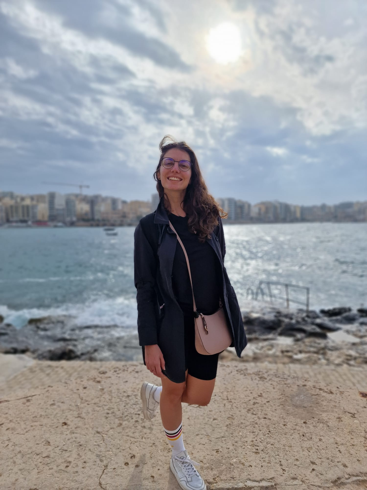

Denisa Danc

Summary
I am always searching for improvement. Life keeps moving.
Education
- Graduated "Facultatea de Automatica si Calculatoare", Timisoara, Promotion 2015-2019
Work Experience
- Waitress at a coffee shop in Piata Victoriei Timisoara
July 2014 - August 2014
- Take customer orders
- Make inventory for the used products
- Learned from italian customers how small should an espresso be
- Desk receptionist
May 2017- March 2018
- Provide gym membership
- Show customers how to use the equipment
- Mentain customer records and update information
- Provide cleaning of the equipments and entire workplace
- Software Tester
May 2019- Present
- Gain knowledge in all Software Test Levels: Module Test, Integration Test, Software Test
- Design, implement and execute automated test cases using CAPL and Matlab scripting
- Maintain automation of the test cases using gitlab enviroment with a nightly execution
- Provide improvement ideas for cost reduction
- Good understanding of testing a safety product and apply all the processes for a safety point of view
- Use and understand I2C communication protocol
- Use and understand UDS protocol
Skills
- Focused and paying attention to details
- Eagred to teach and to improve
- Testing Tools: CANoe, CAPL, Matlab Scripting, Matlab Simulink, TPT
Other
Hobbys